Art Project
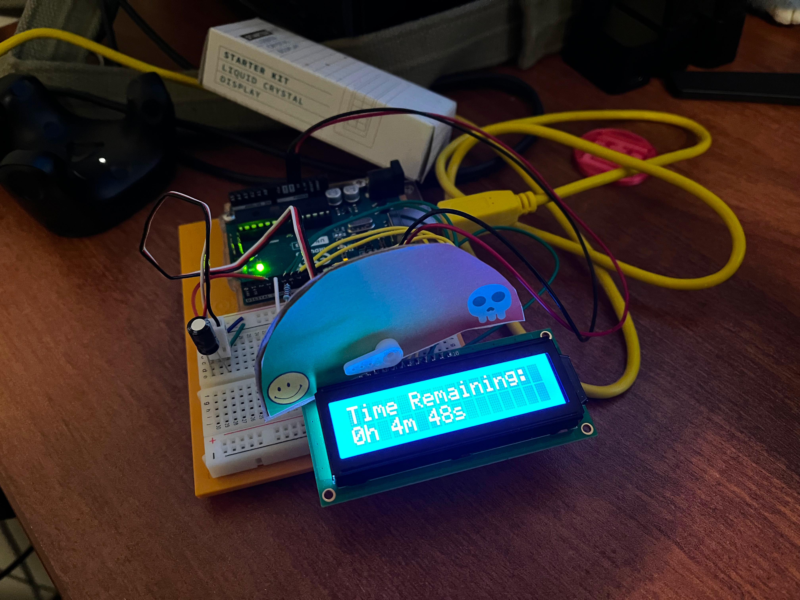Ok, this time we are tasked with creating a piece of art that evokes an emotion. The emotion that I decided to go with is impending doom because that is the emotion that I felt when I realized that I completely missed the due date for this assignment. The idea that I had was that I would create a doomsday timer of sorts that shows the time left until a deadline.
 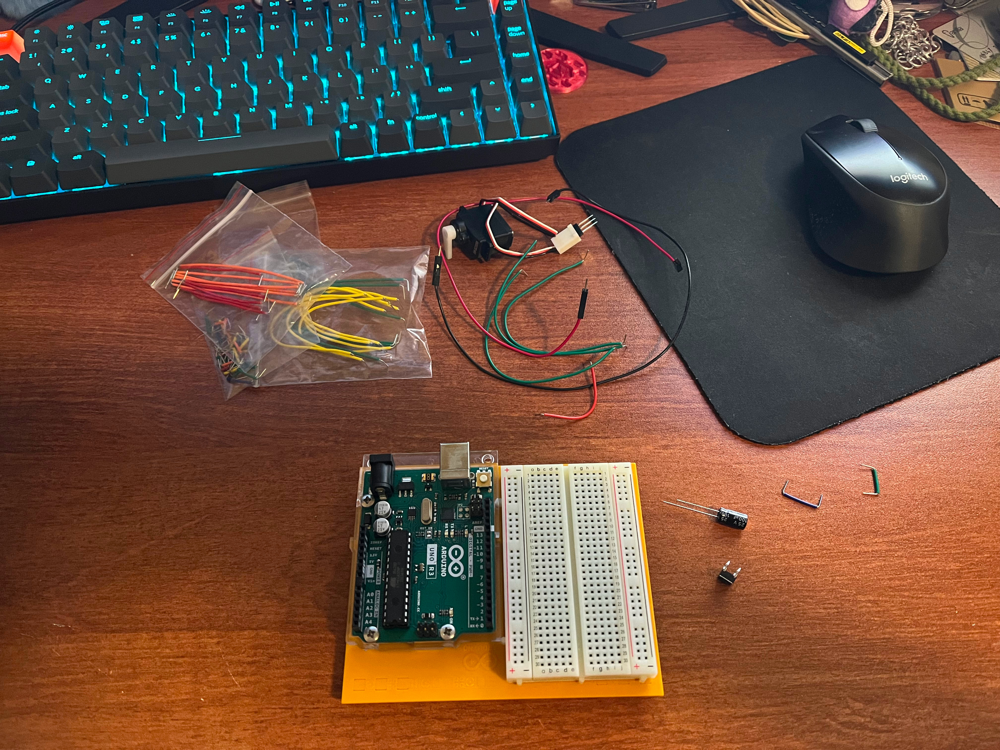
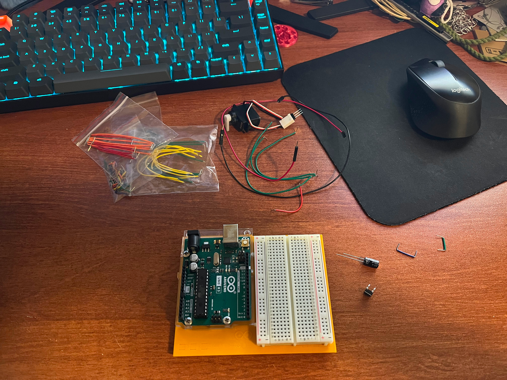
As always I started by laying out all of my components.
Setting up this initial circuit was very simple and I was able to copy the servo setup from the mood cue project from earlier in the semester.
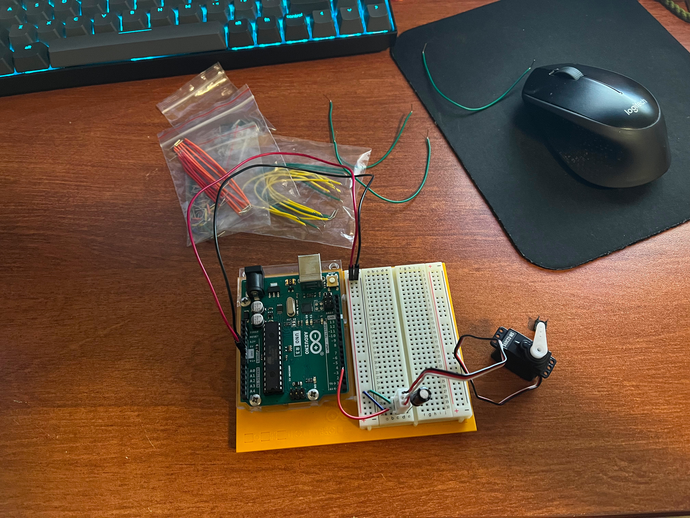 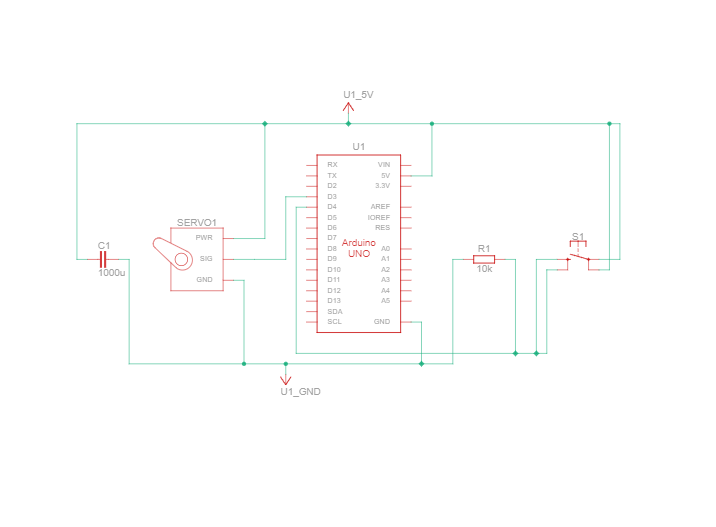After getting this initial circuit set up I was able to code it so that the user inputs the target date and the current date. The servo would then rotate over 180 degrees using the map function as the current date approached the target date. The problem was that I needed a way to start the timer so I added a button.
Once the button was added I needed to create a visual that would show the user what the progress of the servo arm. As it stands currently it doesn’t really exude the feeling of impending doom that I am looking for.
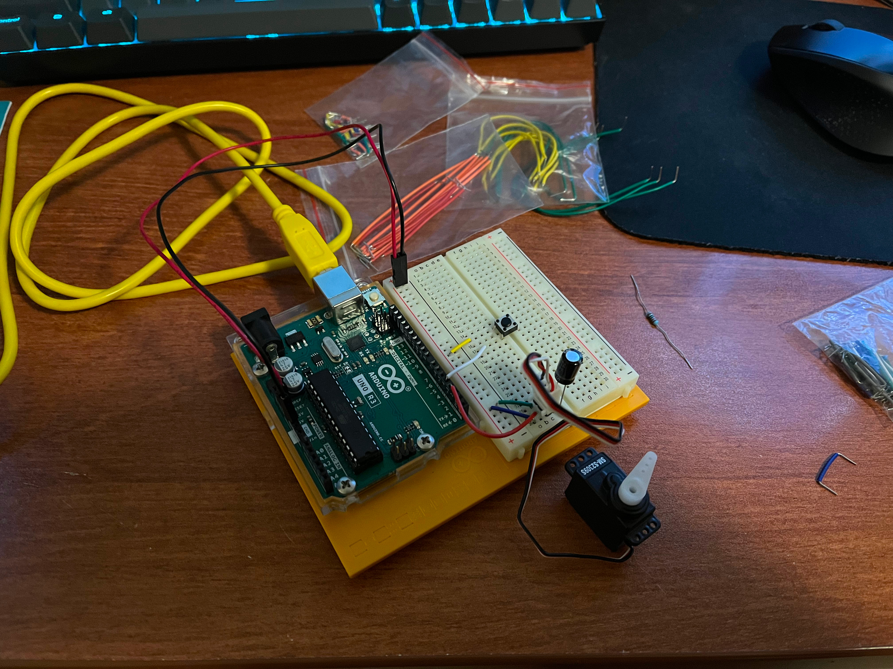 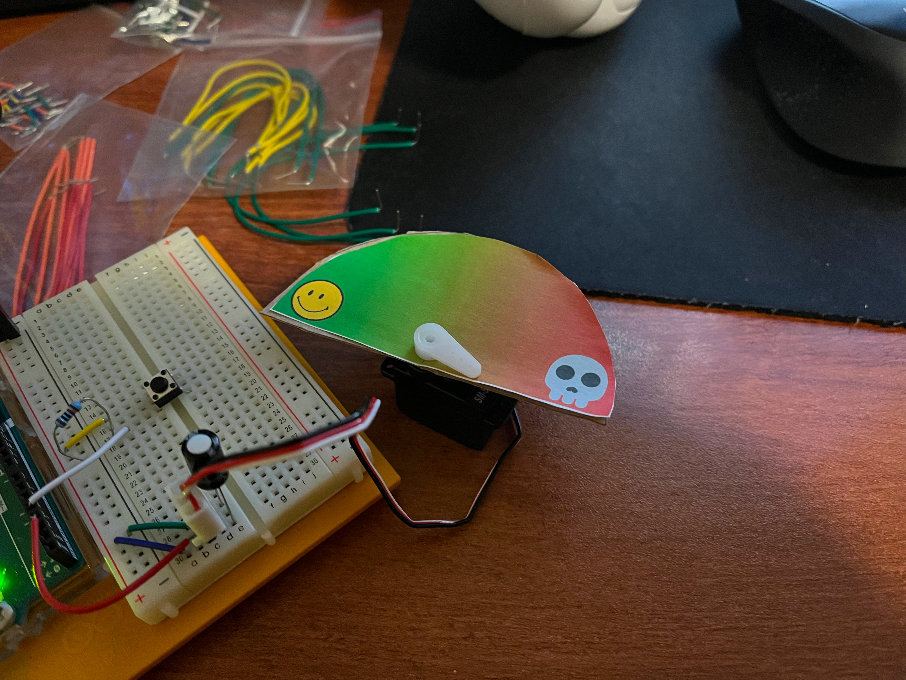Ah, that’s better. But I still feel like I could go even further to sell the countdown as well as give the user a better idea of precisely how much time is left.
I decided to give it an LCD that would show the countdown as it happened. This setup was borrowed from the Magic 8-Ball project that we did.
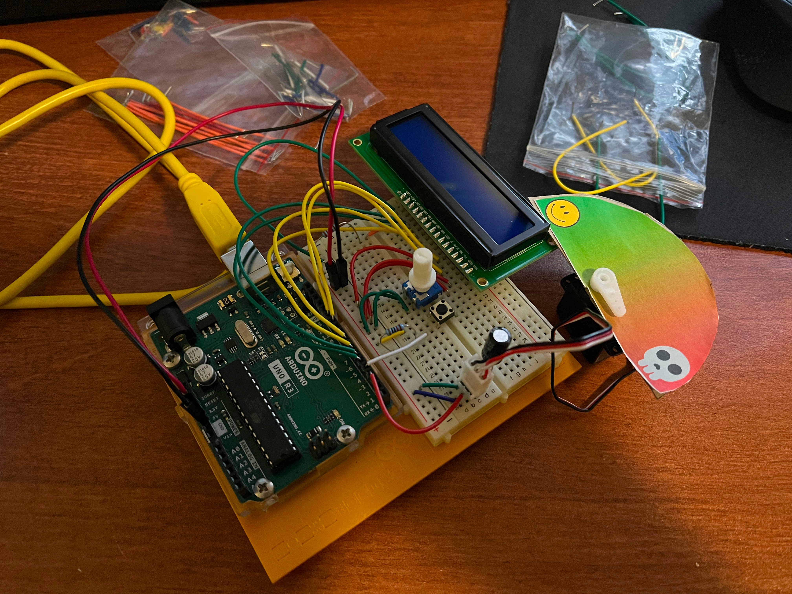Now that it has the countdown I think that it sells the feeling of impending doom that I was hoping for.
The code for this project was a bit of a challenge because dealing with time is hard. I originally intended for the user to only have to input the target date and just get the current time from the computer. Sadly, I couldn’t figure out how to get the system time onto the Arduino so I just had the user input the current time instead. Once the two times are set up I waited until the button was pressed before calling a getTimeDifferenceInSeconds() function. This function used the TimeLib library function makeTime() to convert the dates into seconds. Once they were in seconds it was easy enough to just subtract the two to get the difference in seconds. Using this difference in seconds I fed it into a map function to get the angle needed for the servo. After that was done I needed to update the current time so I wrote an updateCurrentTime() function to handle that. What it did was index the second and then have a series of if statements to roll over the minutes, hours, days, months, and years. Getting it so that it would work for months with 30 and 31 days as well as handling leap years was a pain but I was able to get it to work. The final task was getting the LCD screen to display the time remaining. This was easy to set up compared to figuring out how to do leap years. The only problem that I ran into was that with extremely long time differences I ran into integer overflow problems. This was easy to fix by using floats. With that all done the project is complete.
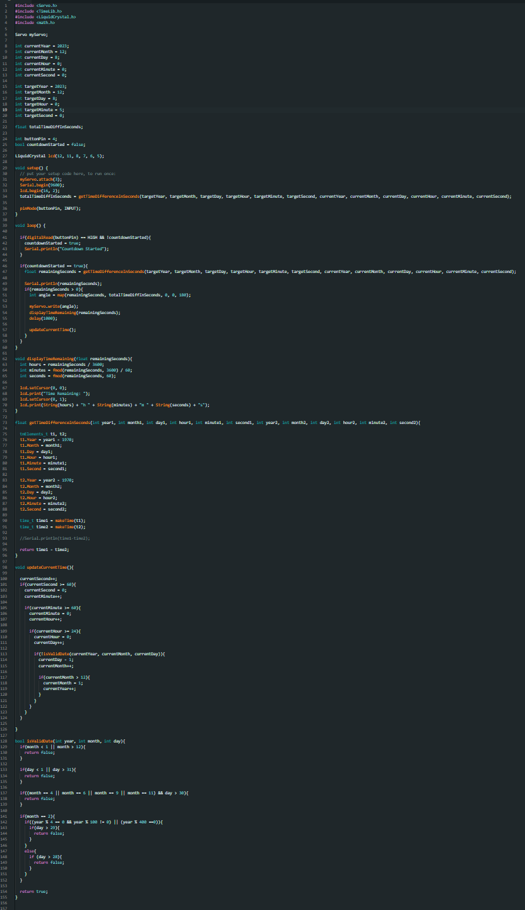 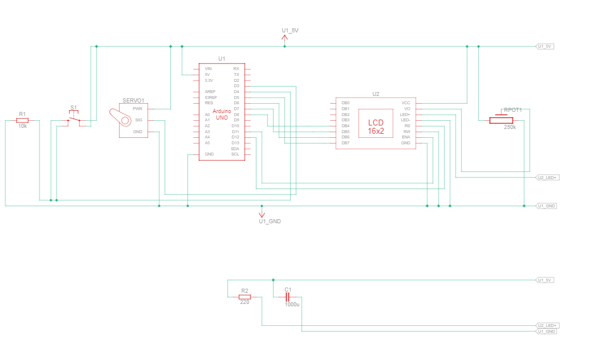 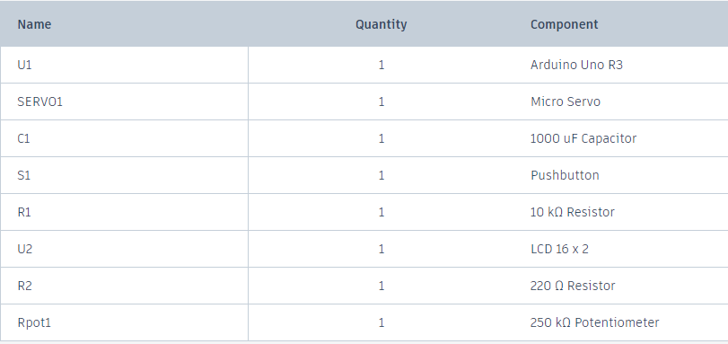